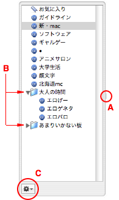

CocoMonar ヘルプ
CocoMonar ヘルプ
図解 掲示板リスト・ドロワー
ドロワーとは、引き出しという意味です。

- ドロワーの表示、非表示を切り替えるには、ツールバーの「掲示板リストを表示（隠す）」ボタンをクリックするか、「掲示板」＞「掲示板リストを表示（隠す）」と選びます。
- ドロワーの幅を変更するには、ふち（A）をつかんでドラッグします。
- 左側に三角マーク（B）が付いている項目は、複数の掲示板が格納された「カテゴリ」です。三角マークをクリックすると、カテゴリに含まれる掲示板が表示されます（Finder のリスト表示をイメージしてください）。
- ドロワーの飛び出す方向を変えるには、アプリケーションメニュー（「CocoMonar」メニュー）から「環境設定...」を選び、さらに「一般」をクリックしてオプションを選択します。
- リストの順序を入れ替えるには、各項目をドラッグして好きな位置に移動します。
- リストの項目をカテゴリに入れるには、そのカテゴリにドラッグします。
- リストの項目を削除するには、その項目を control キーを押しながらクリックして、コンテキストメニューから「削除...」を選びます。
- ドロワー下部の小さなボタン（「アクションボタン」と呼ばれます）（C）をクリックすると、掲示板の追加やリストの編集、アドレスの更新をすぐに実行できます。
ユーザ定義リストを作成する｜基本的な使い方